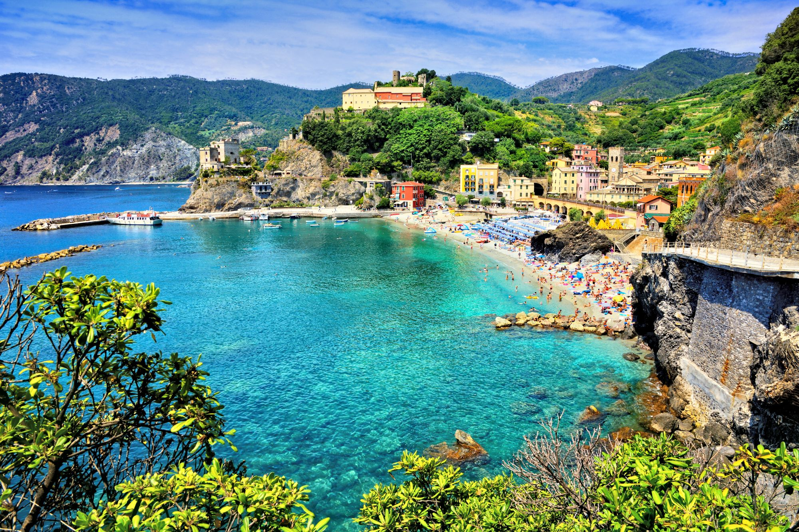

Bem-vindo à página de Pontos Turísticos!
Cinque Terre
Cinque Terre é o nome dado a cinco vilarejos de pescadores localizados em uma encosta banhada pelo mar Mediterrâneo. O que faz do destino ser tão especial é o seu charme e a simplicidade, que se unem com a paisagem paradisíaca, criando um dos destinos mais incríveis da Itália e de toda Europa. O local é um Parque Nacional Italiano tombado pela UNESCO!
Ilha de Favignana
Bem próximo ao litoral da Sicília está a paradisíaca pequena Ilha de Favignana, indicado para quem gosta de praias com tons de azul surreais e de curtir um outro tipo de turismo: o que conta com paisagens naturais apaixonantes. No local encontramos um verdadeiro paraíso: a praia de Cala Rossa, considerada uma das mais bonitas do mundo.
Ilhas de Sardenha
A Sardenha é uma ilha paradisíaca localizada no Mediterrâneo, a oeste da Itália. Por lá, o turista encontra aquele clichê deslumbrante: águas cristalinas de cor turquesa e uma cidade charmosa. Afinal, não estamos falando de qualquer ilha: é a segunda maior do Mediterrâneo, repleta de pontos incríveis.